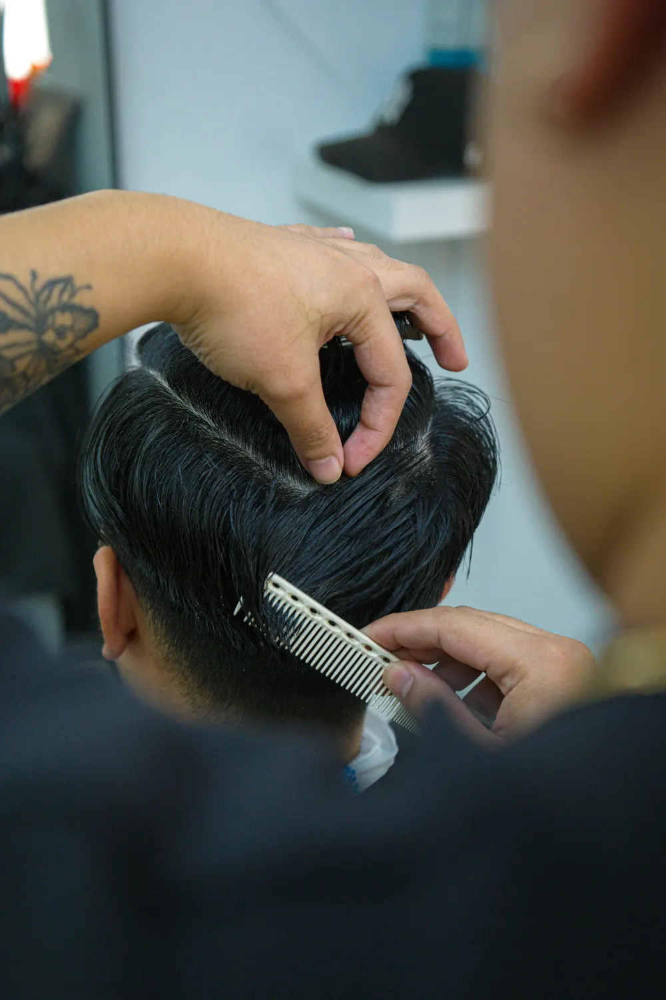
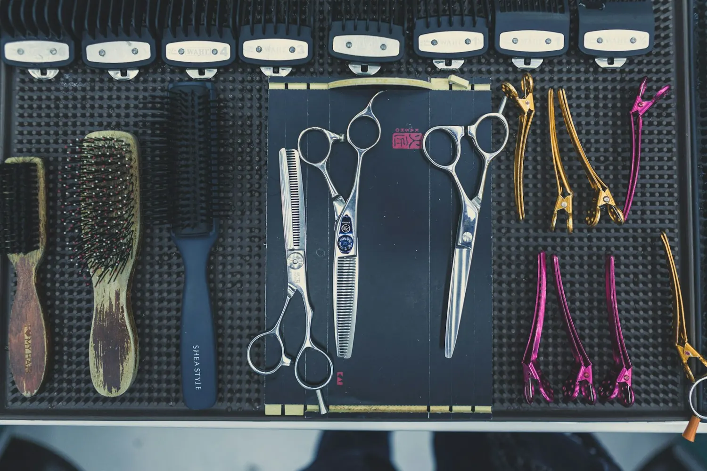
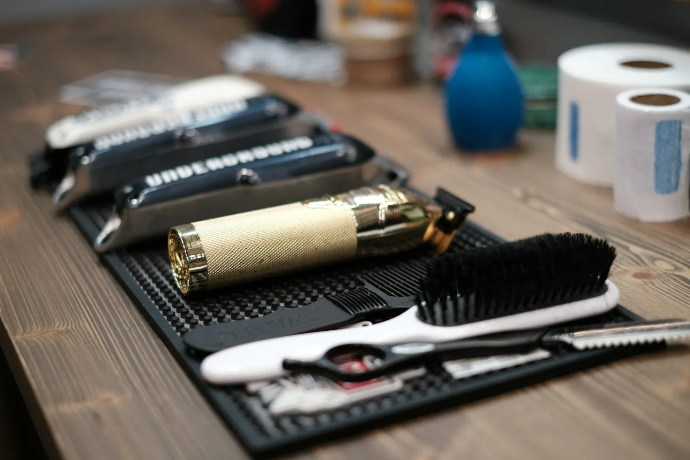
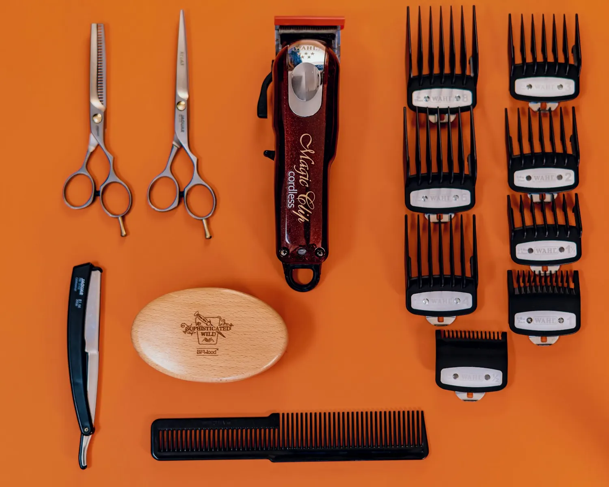

The services
Take a ticket, take a seat.
- No. 01
Haircuts
Cut exactly the way you ask for it, every time.
- No. 02
Neck shave & hot towel
A straight-razor shave on the back of the neck, finished with a hot towel.
- No. 03
Kids' cuts
Patient, calm barbers who are great with kids.
Walk-ins welcome · Appointments available · Call for pricing
Behind the chair
Doug & Dakota
Doug
Barber · Owner
Dakota
Barber
A classic shop in a building with character, right on Park Place in downtown Newark.
Relaxed, welcoming and easy to talk to. Customers bring their kids, their grandkids and their friends.
Snapshots
The tools of a classic shop
Representative stock photos, not photos of Doug Cross Barber Shop.




4.9 stars · 239 Google reviews
Word around Licking County
- ★★★★★
Hair was cut exactly as I asked. Even more impressive that I've never had done in 60 years of haircuts was the back of neck shave with a straight razor, then a hot towel around the neck. Wow!!
Google reviewer, March 2026 - ★★★★★
Doug and Dakota run a tight OG barber shop, best in Licking County IMHO. It has a cool vibe and even better cuts.
Google reviewer, March 2026 - ★★★★★
Thank you, D , you have a calmness that really helped my grandson feel comfortable in your chair. His hair looked great, and he said he wants to come back to you again!
Google reviewer, March 2026
Visit
Hours & location
Open
| Monday | Closed |
|---|---|
| Tue – Fri | 9:30 AM – 6 PM |
| Saturday | 8 AM – 2 PM |
| Sunday | Closed |
Walk-ins & appointments
Doug Cross Barber Shop
3 S Park PlNewark, OH 43055
(740) 755-4006 · dougcrossbarber@gmail.com
Get directionsDoug Cross Barber Shop
Due for a fresh cut?
Walk in Tuesday through Saturday, or call ahead for an appointment.